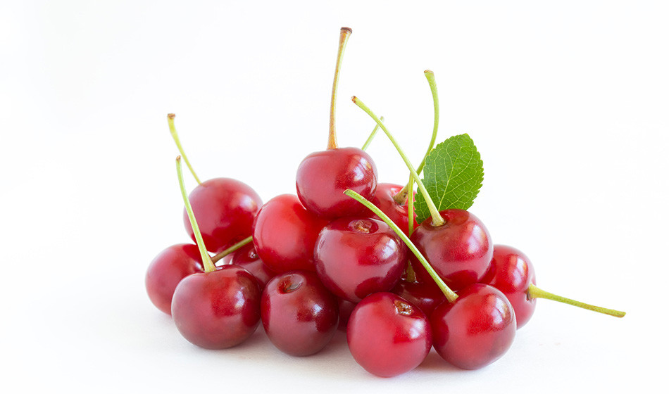
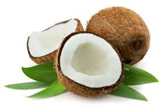
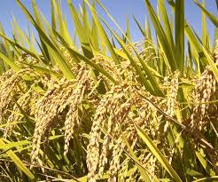

বাংলাদেশ কৃষিপ্রধান দেশ। এদেশে শতকরা ৭৫ ভাগ লোক গ্রামে বাস করে। বাংলাদেশের গ্রাম এলাকায় ৫৯.৮৪% লোকের এবং শহর এলাকায় ১০.৮১% লোকের কৃষিখামার রয়েছে। মোট দেশজ উৎপাদন তথা জিডিপিতে কৃষিখাতের অবদান ১৯.১% এবং কৃষিখাতের মাধ্যমে ৪৮.১% মানুষের কর্মসংস্থান তৈরি হচ্ছে। ধান,পাট,তুলা,আখ,ফুল ও রেশমগুটির চাষসহ বাগান সম্প্রসারণ,মাছ চাষ,সবজি, পশুসম্পদ উন্নয়ন, মাটির উর্বরতা বৃদ্ধি,বীজ উন্নয়ন ও বিতরণ ইত্যাদি বিষয়সমূহ এ দেশের কৃষি মন্ত্রণালয় ও সংশ্লিষ্ট বিভাগসমূহের কর্মকাণ্ডের অন্তর্ভুক্ত।
এদেশের কৃষকরা সাধারণত সনাতন পদ্ধতিতে চাষাবাদ করে থাকে। বেশিরভাগ কৃষক এখনও ফসল উৎপাদন ও প্রক্রিয়াজাতকরণে লাঙ্গল,মই এবং গরু ইত্যাদির উপর নির্ভরশীল। তবে কৃষকদের অনেকেই এখন বিভিন্ন আধুনিক কৃষি-প্রযুক্তি ব্যবহারের মাধ্যমে পূর্বের তুলনায় ফলন বাড়াতে সক্ষম হয়েছে। ধান ও পাট বাংলাদেশের প্রধান ফসল হলেও গম,চা,আখ,আলু এবং বিভিন্ন ধরনের শাক-সবজি এদেশে উল্লেখযোগ্য পরিমাণে উৎপাদিত হয়।
কৃষি মন্ত্রণালয় বাংলাদেশের কৃষিখাতের উন্নয়নের জন্য সরকারের দায়িত্বপ্রাপ্ত মন্ত্রণালয় যা বিভিন্ন প্রকল্প ও সংস্থার মাধ্যমে কৃষিখাত উন্নয়নে কাজ করে যাচ্ছে। এই মন্ত্রণালয়ের কাজের পরিধি কৃষিপণ্যের উন্নয়ন থেকে শুরু করে কৃষি, কৃষি প্রকৌশল ও কৃষি অর্থনীতির ওপর গবেষণাসহ কৃষিভিত্তিক শিল্পের উন্নয়ন পর্যন্ত বিস্তৃত। কৃষি সম্প্রসারণ;অধিদপ্তর -এর কার্যকর সেবা কৃষিখাতে যুগান্তকারী সাফল্য এনে দিয়েছে। বাংলাদেশ কৃষি উন্নয়ন কর্পোরেশন (বিএডিসি) উচ্চ ফলনশীল জাতের বীজের উৎপাদন বৃদ্ধি ও সরবরাহ করার কাজে নিয়োজিত। বিএডিসির ২১টি বীজ বহুমুখীকরণ খামার এবং ১৫টি কনট্রাক্ট গ্রোয়ার্স জোন রয়েছে। ১২টি বীজ প্রক্রিয়াকরণ কেন্দ্রে কৃষিজাত পণ্যের বীজ যান্ত্রিকভাবে প্রক্রিয়াজাত করা হয়। এছাড়াও বেসরকারি পর্যায়ে ব্যক্তি উদ্যোগ, গবেষণা প্রতিষ্ঠান ও বাণিজ্যিক সংস্থা কৃষির উন্নয়নে কাজ করে যাচ্ছে।
কৃষি মন্ত্রণালয়ের আওতাধীন বাংলাদেশ কৃষি গবেষণা কাউন্সিল (বিএআরসি) সরকারি কয়েকটি মন্ত্রণালয়ের সাথে যৌথভাবে কৃষিখাত উন্নয়ন কর্মকাণ্ড পরিচালনা করে। মন্ত্রণালয়গুলো হচ্ছে কৃষি, বন ও পরিবেশ, মৎস্য ও পশুসম্পদ, পল্লী উন্নয়ন, শিক্ষা, শিল্প, বাণিজ্য, বিজ্ঞান ও প্রযুক্তি মন্ত্রণালয়।
খাদ্য নিরাপত্তা এবং রাজনৈতিক স্থিতিশীলতার ক্ষেত্রে চাল উৎপাদনের গুরুত্ব অনুধাবন করে,বাংলাদেশ ধান গবেষণা কেন্দ্র ধান উৎপাদনের ক্ষেত্রে বৈপ্লবিক উন্নতি, কম উৎপাদনশীল ধানের পরিবর্তে উচ্চ ফলনশীল (উফশী) ধানের চাষ এবং দীর্ঘ দিনের প্রচলিত পুরনো উৎপাদন পদ্ধতির পরিবর্তে আধুনিক বিজ্ঞানসম্মত পদ্ধতি ব্যবহার প্রবর্তনের জন্য কাজ করছে। আন্তর্জাতিক ধান গবেষণা কেন্দ্র ও এ বিষয়ে কাজ করছে।
বাংলাদেশ কৃষি গবেষণা কেন্দ্র দেশের সবচেয়ে বড় বহুমুখী শস্য গবেষণা প্রতিষ্ঠান। গম, আলু, ডাল, তৈলবীজ, সবজি, ফল, মশলা, ফুল ইত্যাদি বিভিন্ন শস্য নিয়ে এই প্রতিষ্ঠান গবেষণা করে থাকে। প্রকরণ উন্নয়নের পাশাপাশি মৃত্তিকা ও শস্য ব্যবস্থাপনা,রোগ-বালাই ও ক্ষতিকর পতঙ্গ ব্যবস্থাপনা, সেচ ও পানি ব্যবস্থাপনা, কৃষি উপকরণ উন্নয়ন, শস্যকর্তন পরবর্তী খামার ব্যবস্থাপনা, উৎপাদন ও বিপণন সংক্রান্ত আর্থ সামাজিক অভিঘাত এই প্রতিষ্ঠানের গবেষণার ক্ষেত্র।
পারমাণবিক কৃষি বাংলাদেশের কৃষিখাতে একটি নতুন মাত্রা এনেছে। বাংলাদেশ পরমাণু কৃষি গবেষণা ইন্সটিটিউট (বিনা) বিকিরণ প্রয়োগের মাধ্যমে বিভিন্ন শস্যের ৩৭টি উন্নত জাত তৈরি করেছে। জাতীয় বীজ প্রত্যয়ন সংস্থা এগুলোকে কৃষক পর্যায়ে বিতরণের জন্য অবমুক্ত করেছে।
বৃহত্তর রাজশাহী, দিনাজপুর,রংপুর এবং বগুড়া জেলা এবং ভারতের পশ্চিমবঙ্গের মালদহ জেলা বরেন্দ্র অঞ্চল হিসেবে খ্যাত। এখানে মাটি শক্ত, লাল ও অনুর্বর।বরেন্দ্র বহুমুখী উন্নয়ন কর্তৃপক্ষ বাংলাদেশ কৃষি উন্নয়ন কর্পোরেশন -এর অধীনে এ অঞ্চলের কৃষির উন্নয়নে কাজ করে যাচ্ছে।
কৃষি মন্ত্রণালয়ের অধীনে প্রতিষ্ঠিত তুলা উন্নয়ন বোর্ড বাংলাদেশে তুলাচাষ প্রসারে ও উৎসাহ দানে কাজ করে থাকে। বীজ প্রত্যয়ন সংস্থা চাল, গম, পাট এবং আলু বীজের মান নিয়ন্ত্রণে ভূমিকা রেখে চলেছে।
কৃষি ও বন মন্ত্রণালয়ের অধীনে প্রতিষ্ঠিত মৃত্তিকা সম্পদ উন্নয়ন কেন্দ্রে র কাজ হল মৃত্তিকা সমীক্ষা, সেচ প্রকল্প সমীক্ষা ও এবং মৃত্তিকা নির্দেশিকা ও সহায়িকা তৈরি করা যাতে মৃত্তিকা সম্পদ যৌক্তিক ভাবে ব্যবহৃত হয়।
অন্যান্য প্রতিষ্ঠানের মধ্যে কৃষি মন্ত্রণালয়ের কৃষি বাজারজাতকরণ বিভাগ তথ্য প্রযুক্তির মাধ্যমে কৃষি বাজার সংক্রান্ত জরুরি তথ্য যেন সহজে কৃষক, ব্যবসায়ী, সরকার, নীতি নির্ধারক, উন্নয়ন সংস্থা ইত্যাদির মাঝে সরবরাহ করা যায় তার জন্য একটি ই-গর্ভনেন্স প্রকল্প হাতে নিয়েছে। ১৯৬১ সালে কৃষি মন্ত্রণালয় কৃষি তথ্য সেবা শুরু করে। গণমাধ্যম বিশেষ করে রেডিও, টেলিভিশন, প্রামাণ্যচিত্র, পোস্টার, লিফলেট, পুস্তিকা, খবরপত্র, সাময়িকী, ব্যানার, ফেস্টুন এসবের মাধ্যমে এই সেবা কৃষি ক্ষেত্রে বিশেষ অবদান রেখে চলেছে।
বাংলাদেশ ফলিত পুষ্টিবিদ্যা ও মানবসম্পদ উন্নয়ন বোর্ড প্রশিক্ষণ কর্মসূচি, প্রচারণা বৈঠক, সিম্পোজিয়াম, কর্মশালা ও গণমাধ্যমের মাধ্যমে সরকারি ও বেসরকারি প্রতিষ্ঠানে পুষ্টিবিদ্যায় দক্ষ মানবসম্পদ উন্নয়নের কাজ করে থাকে।
বাংলাদেশে কর্মসংস্থানের সবচেয়ে বড় খাত হচ্ছে কৃষি। ২০১৮ সালের বাংলাদেশের অর্থনৈতিক সমীক্ষার তথ্যমতে, এটি মোট শ্রমশক্তির ৪০.৬ ভাগ যোগান দিয়ে থাকে এবং দেশের জিডিপিতে এর অবদান ১৪.১০ শতাংশ।[১] দেশের সামষ্টিক অর্থনীতিতে যেমন কর্মসংস্থান সৃষ্টি, দারিদ্র দূরীকরণ, মানবসম্পদ উন্নয়ন এবং খাদ্য নিরাপত্তায় এই খাতের ভূমিকা অনস্বীকার্য।
বাংলাদেশের জনগনের একটা বিশাল অংশ তাদের জীবনধারণের জন্য কৃষির উপর নির্ভর করে। যদিও ধান ও পাট এখানকার প্রধান ফসল তা সত্ত্বেও গমের বৃহত্তর গুরুত্ব রয়েছে। উত্তর-পূর্ব অঞ্চলে চায়ের চাষ হয়ে থাকে। উর্বর জমি ও পানির প্রাচুর্যতার কারণে বাংলাদেশের অনেক অঞ্চলে বছরে তিন বার ধান উথপাদন ও চাষাবাদ হয়ে থাকে। প্রতিকূল আবহাওয়া সত্ত্বেও অনেকগুলো কারণে বাংলাদেশের শ্রমনির্ভর কৃষিতে খাদ্য উৎপাদনে উন্নতির মাত্রা অর্জিত হয়েছে। কারণগুলোর মধ্যে রয়েছে বন্যা নিয়ন্ত্রণ ও সেচ, সারের সর্বোত্তম ব্যবহার ও সরবরাহ এবং গ্রামীণ মানুষকে ঋণের আওতায় আনা। ২০০০ সালে চালের উৎপাদন পরিমান ছিল ৩৫.৮ মিলিয়ন মেট্রিক টন, যা বাংলাদেশের প্রধান ফসল। ২০০৩ সালে ধানে ব্যবহৃত বিভিন্ন ধরনের কীটনাশক যেমন গ্রানুলার কার্বোফুরান, সিনথেটিক পাইরোথ্রোইডস এবং ম্যালাথাইওন ইত্যাদির দেশীয় ব্যবহার ১৩০০০ টন ছাড়িয়ে যায়।[২] কীটনাশক শুধু পরিবেশের জন্য হুমকিস্বরুপ নয় বরং দরিদ্র চাষীর জন্য বাড়তি খরচের বোঝা হিসেবে দেখা দেয়। ধানে কীটনাশকের ব্যবহার কমাতে বাংলাদেশ ধান গবেষণা ইনস্টিটিউট বিভিন্ন এনজিও এবং আন্তর্জাতিক সংস্থার সাথে কাজ করে যাচ্ছে।[৩]
ধানের সাথে তুলনা করলে দেখা যায় যে, ১৯৯৯ সালে গমের উৎপাদনের পরিমান ছিল ১৯ মিলিয়ন মেট্রিক টন। বাড়তি জনসংখ্যার চাপ উৎপাদনের ধারাকে ক্রমাগত বাঁধাগ্রস্ত করছে যা খাদ্য স্বল্পতা তৈরীর জন্য দায়ী, গম যার অন্যতম। বৈদেশিক সাহায্য ও বাণিজ্যিক আমদানি এই ঘাটতি পূরণ করছে।[৪] বেকারত্ব একটি প্রবল সমস্যা এবং বাংলাদেশের কৃষিখাতে উদ্বেগের অন্যতম একটি কারণ। ভবিষ্যতের সরকারগুলোর জন্যে কর্মসংস্থানের বিকল্প উৎস খোঁজা একটি জটিল সমস্যা হিসেবে দেখা দিবে বিশেষ করে ভূমিহীন চাষীদের নিয়ে যারা গ্রামীণ শ্রমের অর্ধেকের যোগানদাতা।
ধান, গম, আম ও পাট এখানকার প্রধান ফসল। সেচ সুবিধার ব্যাপক প্রসারের ফলে অনেক গম উৎপাদক ভুট্টা উৎপাদনে ঝুঁকে পড়ছে যা প্রধানত মুরগী খামারে ব্যবহৃত হয়ে থাকে।[৪] ধান বাংলাদেশের প্রধান ফসল, ২০০৫-০৬ সালে যার উৎপাদনের পরিমান ছিল ২৮.৮ মিলিয়ন মেট্রিক টন। অন্দিকে ২০০৫-০৬ সালে গমের উৎপাদন ছিল ৯ মিলিয়ন মেট্রিক টন।
ঢাকায় অনুষ্ঠিত কৃষি প্রযুক্তি মেলায় আগত দর্শনার্থী বাংলাদেশ বিশ্বের চতুর্থ বৃহৎ চাল উৎপাদক দেশ। গম বাংলাদেশের চিরায়ত কোন ফসল নয় এবং ১৯৮০ এর শেষের দিক থেকে গ্রামীণ এলাকায় অল্প পরিসরে এর উৎপাদন শুরু হয়।[৪] ষাট এবং সত্তরের দশকে এর চাহিদা বাড়তে থাকে কেননা সেসময় বৈদিশিক সাহায্যের অন্যতম উপকরণ ছিল গম। আশির দশকের প্রথমার্ধে দেশীয় গমের বাৎসরিক উৎপাদন ১ মিলিয়ন টন ছাড়িয়ে যায় কিন্তু এর পরিমাণ ছিল মোট উৎপাদিত খাদ্যের ৭ থেকে ৯ শতাংশ মাত্র। ১৯৮৫ অর্থবছরে রেকর্ড ১.৫ মিলিয়ন মেট্রিক টন গম উৎপাদনের লক্ষ্যমাত্রা অর্জিত হয়। প্রায় অর্ধ শতাংশ গমের উৎপাদন ছিল সেচ সুবিধাযুক্ত জমিতে। ১৯৮০ থেকে ১৯৮৬ সাল পর্যন্ত গম চাষের জমির পরিমান অপরিবর্তিত থাকে যা কি না মোট চাষযোগ্য জমির ৬ শতাংশের কিছু কম।
আমদানিকৃত খাদ্যের বেশিরভাগই হচ্ছে গম যা প্রতি বছর ১ মিলিয়ন টন হারে বৃদ্ধি পাচ্ছে এবং ১৯৮৪, ১৯৮৫ এবং ১৯৮৬ অর্থবছরে যা ১.৮ মিলিয়ন টন ছাড়িয়ে যায়। আমদানিকৃত গমের বেশিরভাগই খাদ্য কর্মসূচীর আওতায় অর্থায়ন করে থাকে যুক্তরাষ্ট্র, ইউরোপিয়ান ইকোনোমিক কমিটি এবং ওয়ার্ল্ড ফুড প্রোগ্রাম।
খাদ্যশস্যের উৎপাদন মূলত দেশীয় চাহিদা মেটাতেই হয়ে থাকে। সীমিত পরিমানে কিছু শতাংশ বাণিজ্যিক ভিত্তি করা হয়ে থাকে। দেশীয় চাহিদা মেটাতে উৎপাদিত খাদ্যশস্যের মধ্যে রয়েছে আলু ও মিষ্টি আলু, ১৯৮৪ অর্থবছরে উভয়ের মোট রেকর্ড উৎপাদনের পরিমান ছিল ২৫০০০ টন। এছাড়াও উৎপাদিত ফলের মধ্যে রয়েছে আম, কলা, কাঁঠাল এবং আনারস। চিনির বাৎসরিক উৎপাদনের পরিমান ৭ মিলিয়ন টনের বেশি যা কিছু প্রক্রয়ায় উৎপাদিত হয়ে থাকে। অপরিশোধিত আখ গুড় নামে পরিচিত যা দেশীয় বাজারে বিক্রিত হয়ে থাকে।
কৃষি খাতকে আরো সমৃদ্ধি এবং কৃষকদের সুবিধার জন্য আমরা নিয়ে এসেছি এই ওয়েব ফার্মিং ওয়েব সাইট । এই ওয়েবসাইট থেকে সংগ্রহ করা যাবে সকল ধরনের বীজ এবং চাষাবাদ করার সকল পদ্ধতি।